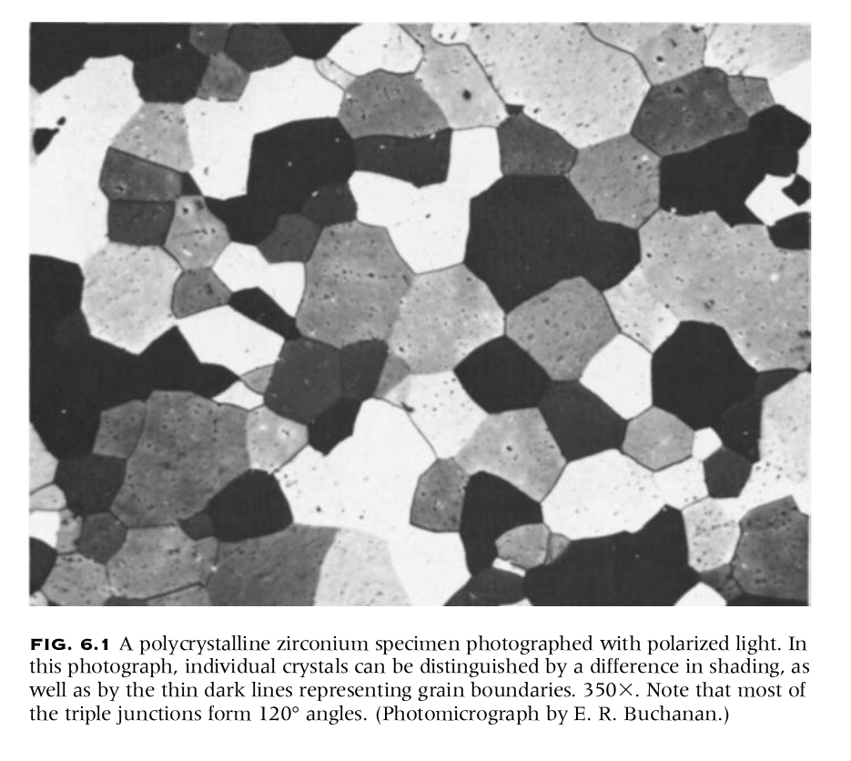
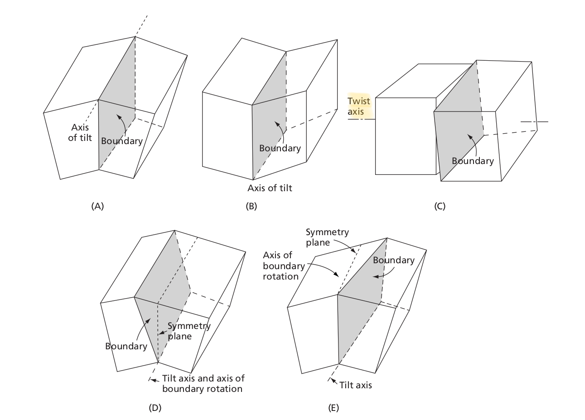
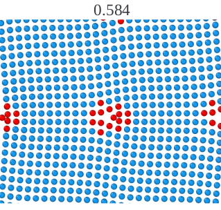
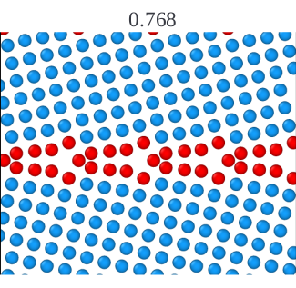
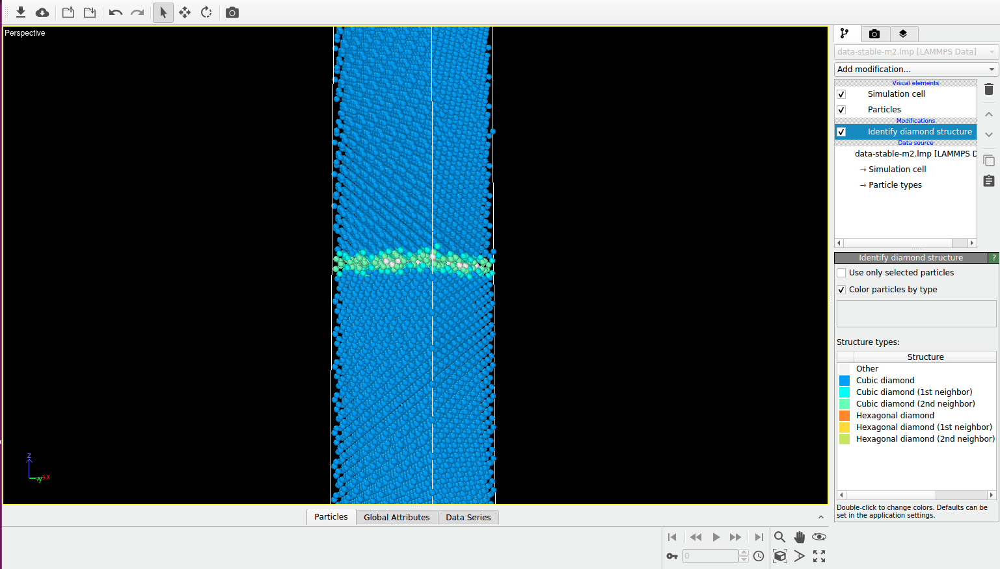
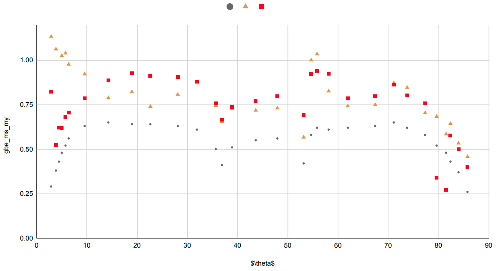
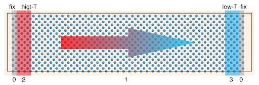
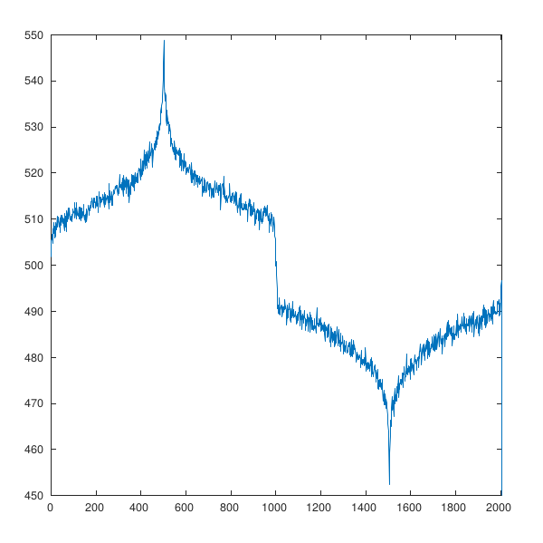

Energy And Kapitza Conductance of Symmetric Tilt Grain Boundaries in Silicon
Last Updated: 02-Dec-2020
Quick overview of my masters research project
- Why to study GBs?
- What we studied?
- What do we observe?
- Summary of the work
(1/8)Introduction to Polycrystalline Materials & Bi-Crystallography

- GBs influences the mechanical and thermal properties of a materials
(2/8) Bicrystal Geometries of GBs

- We were interested in Silicon. Since phononic contribution of thermal conductivity can be well studied in molecular dynamics simulations.
(3/8) Most Frequent GBs Poly-Si
- We selected few STGBs in Si with <100> and <110> axis
- We modeled the GBs
|
Example of Low-angle GB () |
Example of High-angle GB () |
|
 |
 |
- The figure below shows the structure visualised in ovito software package with atoms near GBs in different color.

(4/8) Energetics of <100> and <110> GBs
- We studied 31 GB samples using two different interatomic potentials
- These stable structures are used to find the GB thermal conductance(Kapitza conductance)

(5/8) Idea of Non Equilibrium MD Simulation Technique
- We induce heat flux in the system by creating heat-source and heat-sink. Energy flows from high temperature regions to low temperature regions.
This figure illustrates the technique

-
Since GB is 2d defect and offers resistance to the flow of heat energy across it. This results in temperature drop at the interface.
-
The temperature gradient profile of GBs is shown below. We observe a temperature discontinuity at the interface

(6/8)Measure of Kapitza conductance
- Kapitza conductance is a direct measure of the temperature discontinuity observed at the interface.
(7/8) Correlation between GB Energy and Interface Resistance
- GBs with higher energy has higher structural disorderness and offers higher resistance to the flow of thermal energy
(8/8) Results on GB Structure & Kapitza conductance